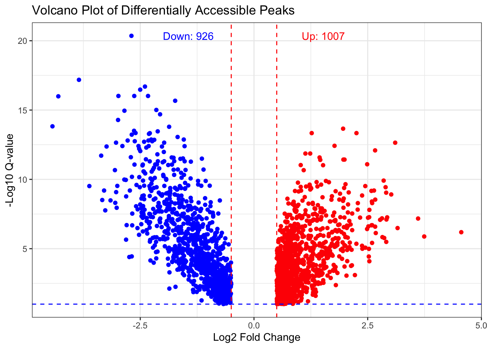
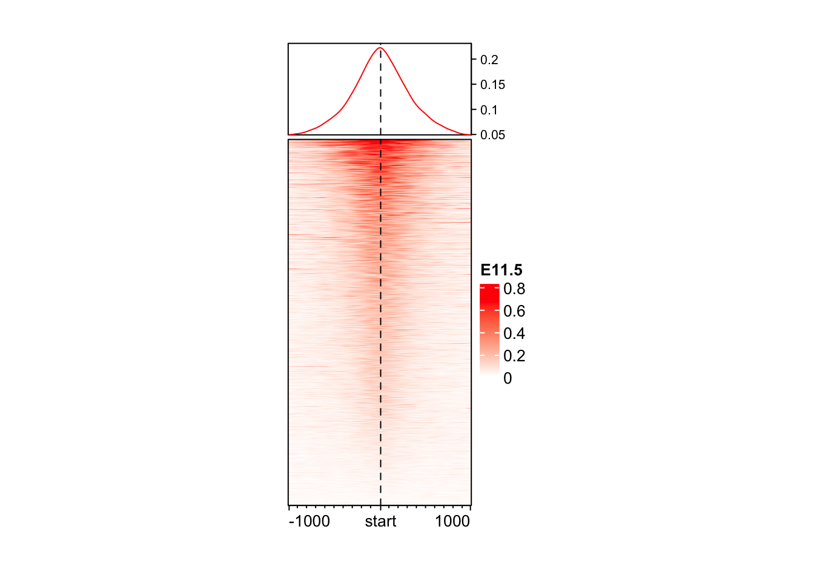
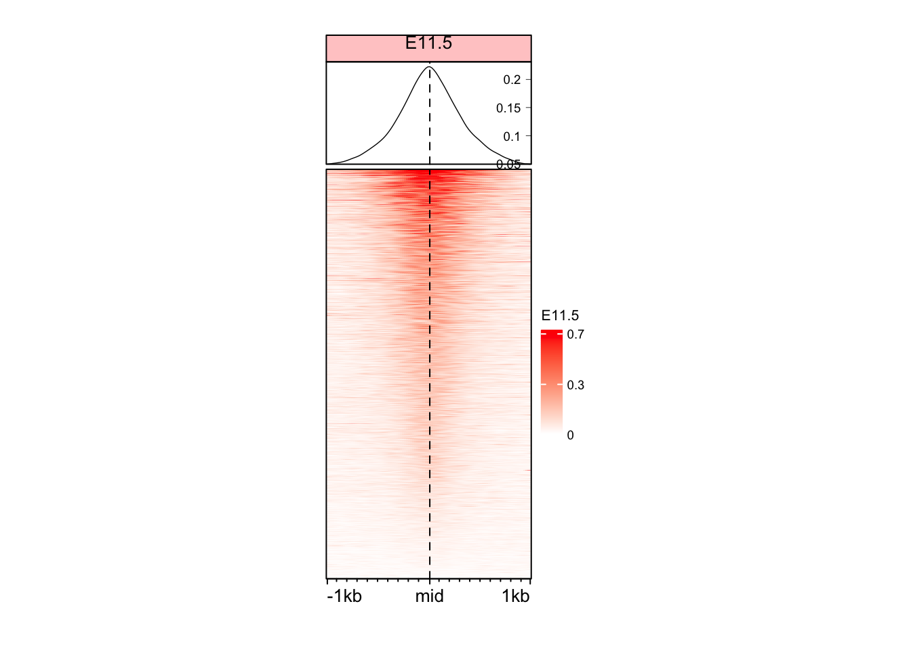
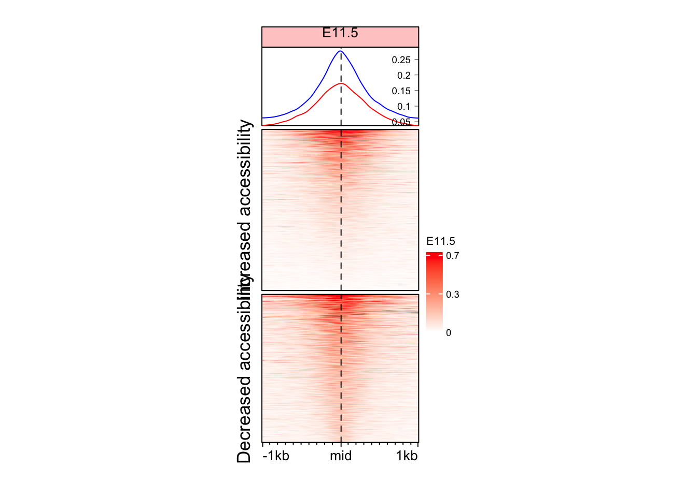
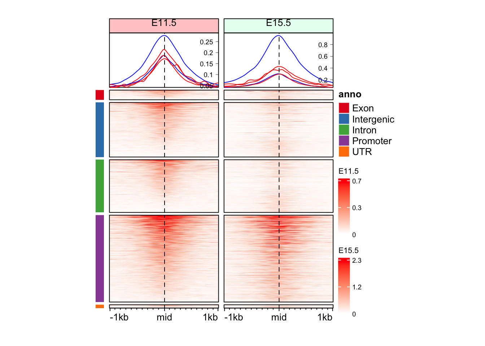
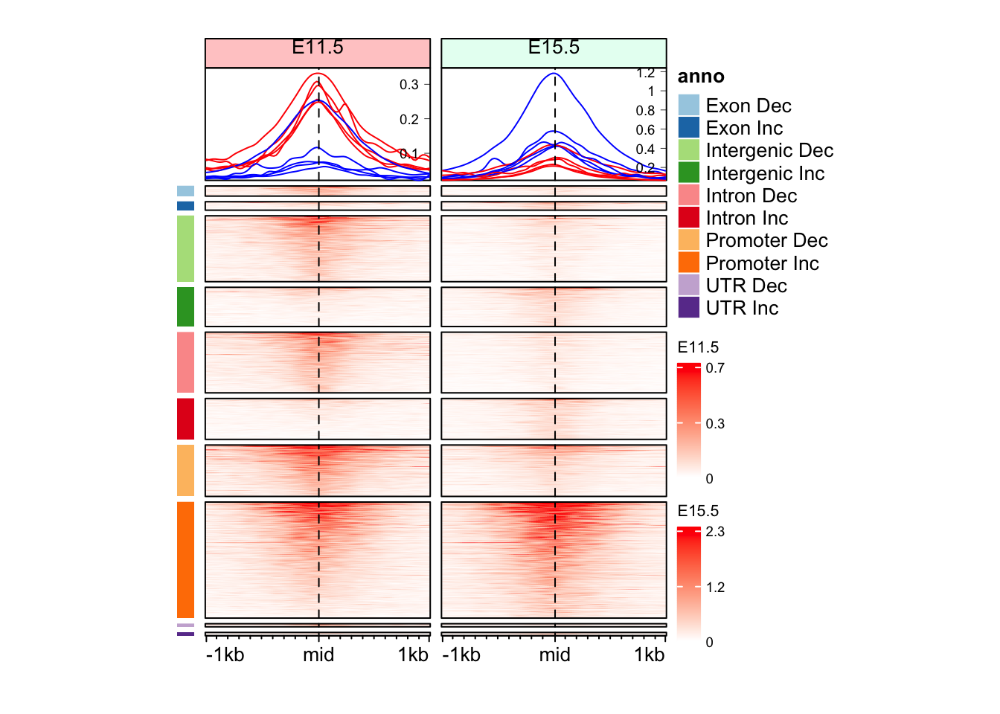
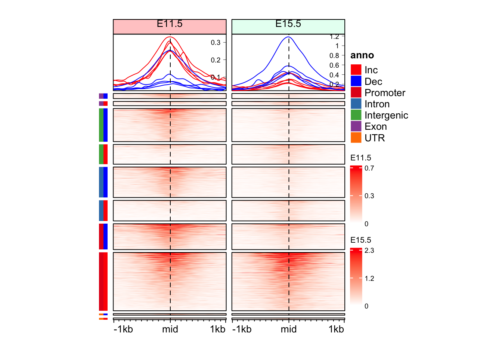

library(SummarizedExperiment)
library(EnrichedHeatmap)
library(gUtils)
library(rtracklayer)
library(circlize)
library(GenomicRanges)
library(ggplot2)Exercise 2
Enriched Heatmaps and identification of regions with different activities
Learning Objectives
- By the end of this section, you will be able to:
- Distinguish between when to use
Heatmap()andHeatmapAnnotation() - Generate row split annotations for enriched heatmaps
- Add multiple categorical annotations with separate color legends
- Avoid common data handling errors in
heatmapplotting
Load Libraries
ATAC SE object
Here we load the SummarizedExperiment for the ATAC-seq data
atac <- readRDS("data/atac_se.rds")ATAC peaks info
Each peak region represent the activity in a genomic region. These peaks are annotated for various features, including their genomic annotations and the results for differential accessibility analysis is also added there.
rowRanges(atac)GRanges object with 3656 ranges and 18 metadata columns:
seqnames ranges strand | annotation geneChr
<Rle> <IRanges> <Rle> | <character> <integer>
[1] chr1 3670547-3672665 * | Promoter (<=1kb) 1
[2] chr1 4332510-4332710 * | Intron (ENSMUST00000.. 1
[3] chr1 4491755-4492573 * | Promoter (1-2kb) 1
[4] chr1 4571186-4572423 * | Distal Intergenic 1
[5] chr1 4785062-4786325 * | Promoter (<=1kb) 1
... ... ... ... . ... ...
[3652] chr2 181764664-181764891 * | Promoter (1-2kb) 2
[3653] chr2 181766881-181767875 * | Promoter (<=1kb) 2
[3654] chr2 181837244-181838655 * | Promoter (<=1kb) 2
[3655] chr2 181863853-181865066 * | Promoter (<=1kb) 2
[3656] chr2 181918525-181918853 * | Distal Intergenic 2
geneStart geneEnd geneLength geneStrand geneId
<integer> <integer> <integer> <integer> <character>
[1] 3214482 3671498 457017 2 497097
[2] 4344146 4360314 16169 2 19888
[3] 4492465 4493735 1271 2 20671
[4] 4491390 4497354 5965 2 20671
[5] 4773206 4785710 12505 2 27395
... ... ... ... ... ...
[3652] 181763332 181827797 64466 1 17932
[3653] 181767029 181795892 28864 1 17932
[3654] 181837854 181857461 19608 1 245867
[3655] 181864337 181870830 6494 1 67005
[3656] 181864360 181866209 1850 1 67005
transcriptId distanceToTSS ENSEMBL SYMBOL
<character> <numeric> <character> <character>
[1] ENSMUST00000070533.4 0 ENSMUSG00000051951 Xkr4
[2] ENSMUST00000027032.5 27604 ENSMUSG00000025900 Rp1
[3] ENSMUST00000191939.1 1162 ENSMUSG00000025902 Sox17
[4] ENSMUST00000192650.5 -73832 ENSMUSG00000025902 Sox17
[5] ENSMUST00000130201.7 0 ENSMUSG00000033845 Mrpl15
... ... ... ... ...
[3652] ENSMUST00000081125.10 1332 ENSMUSG00000010505 Myt1
[3653] ENSMUST00000156190.7 0 ENSMUSG00000010505 Myt1
[3654] ENSMUST00000029116.13 0 ENSMUSG00000027589 Pcmtd2
[3655] ENSMUST00000039551.8 0 ENSMUSG00000038628 Polr3k
[3656] ENSMUST00000153214.1 54165 ENSMUSG00000038628 Polr3k
GENENAME anno logFC logCPM F
<character> <character> <numeric> <numeric> <numeric>
[1] X-linked Kx blood gr.. Promoter 0.602984 10.45378 41.78446
[2] retinitis pigmentosa.. Intron 0.855748 5.18424 3.68371
[3] SRY (sex determining.. Promoter -0.620926 7.13469 9.14522
[4] SRY (sex determining.. Intergenic -0.511046 8.90885 15.15688
[5] mitochondrial riboso.. Promoter 0.540908 8.63469 15.08892
... ... ... ... ... ...
[3652] myelin transcription.. Promoter -1.275275 5.54135 10.44866
[3653] myelin transcription.. Promoter 0.477658 7.56969 6.03877
[3654] protein-L-isoasparta.. Promoter 0.689247 7.92175 16.67881
[3655] polymerase (RNA) III.. Promoter 0.241693 9.05746 4.06676
[3656] polymerase (RNA) III.. Intergenic 0.394577 6.84745 2.73331
PValue qvalue
<numeric> <numeric>
[1] 6.58453e-08 4.81983e-07
[2] 6.13517e-02 9.28785e-02
[3] 4.12368e-03 8.38540e-03
[4] 3.27158e-04 8.67115e-04
[5] 3.36058e-04 8.82634e-04
... ... ...
[3652] 0.002309221 0.00497558
[3653] 0.017945118 0.03116850
[3654] 0.000181039 0.00051468
[3655] 0.049773014 0.07677364
[3656] 0.105289776 0.15077925
-------
seqinfo: 21 sequences from an unspecified genome; no seqlengthsrd_atac <- rowRanges(atac)
rd_atac <- rd_atac[abs(rd_atac$logFC) >= 0.5 & rd_atac$qvalue <= 0.1]
colnames(elementMetadata(rd_atac)) <- paste("ATAC", colnames(elementMetadata(rd_atac)), sep = "_")Volcanoplot to observe differentially accessible peaks
df <- data.frame(rd_atac)
head(df) seqnames start end width strand
1 chr1 3670547 3672665 2119 *
2 chr1 4332510 4332710 201 *
3 chr1 4491755 4492573 819 *
4 chr1 4571186 4572423 1238 *
5 chr1 4785062 4786325 1264 *
6 chr1 5232000 5233386 1387 *
ATAC_annotation ATAC_geneChr
1 Promoter (<=1kb) 1
2 Intron (ENSMUST00000208660.1/19888, intron 3 of 29) 1
3 Promoter (1-2kb) 1
4 Distal Intergenic 1
5 Promoter (<=1kb) 1
6 Distal Intergenic 1
ATAC_geneStart ATAC_geneEnd ATAC_geneLength ATAC_geneStrand ATAC_geneId
1 3214482 3671498 457017 2 497097
2 4344146 4360314 16169 2 19888
3 4492465 4493735 1271 2 20671
4 4491390 4497354 5965 2 20671
5 4773206 4785710 12505 2 27395
6 5083164 5099777 16614 1 108664
ATAC_transcriptId ATAC_distanceToTSS ATAC_ENSEMBL ATAC_SYMBOL
1 ENSMUST00000070533.4 0 ENSMUSG00000051951 Xkr4
2 ENSMUST00000027032.5 27604 ENSMUSG00000025900 Rp1
3 ENSMUST00000191939.1 1162 ENSMUSG00000025902 Sox17
4 ENSMUST00000192650.5 -73832 ENSMUSG00000025902 Sox17
5 ENSMUST00000130201.7 0 ENSMUSG00000033845 Mrpl15
6 ENSMUST00000192142.1 148836 ENSMUSG00000033793 Atp6v1h
ATAC_GENENAME ATAC_anno ATAC_logFC
1 X-linked Kx blood group related 4 Promoter 0.6029841
2 retinitis pigmentosa 1 (human) Intron 0.8557477
3 SRY (sex determining region Y)-box 17 Promoter -0.6209259
4 SRY (sex determining region Y)-box 17 Intergenic -0.5110459
5 mitochondrial ribosomal protein L15 Promoter 0.5409079
6 ATPase, H+ transporting, lysosomal V1 subunit H Intergenic -2.5017799
ATAC_logCPM ATAC_F ATAC_PValue ATAC_qvalue
1 10.453783 41.784460 6.584528e-08 4.819830e-07
2 5.184242 3.683714 6.135165e-02 9.287853e-02
3 7.134690 9.145224 4.123677e-03 8.385399e-03
4 8.908847 15.156883 3.271580e-04 8.671152e-04
5 8.634686 15.088922 3.360576e-04 8.826341e-04
6 8.555241 257.544409 3.686136e-20 3.369128e-17 seqnames start end width strand
region_1 chr1 3670547 3672665 2119 *
region_2 chr1 4332510 4332710 201 *
region_3 chr1 4491755 4492573 819 *
region_4 chr1 4571186 4572423 1238 *
region_5 chr1 4785062 4786325 1264 *
region_6 chr1 5232000 5233386 1387 *
ATAC_annotation ATAC_geneChr
region_1 Promoter (<=1kb) 1
region_2 Intron (ENSMUST00000208660.1/19888, intron 3 of 29) 1
region_3 Promoter (1-2kb) 1
region_4 Distal Intergenic 1
region_5 Promoter (<=1kb) 1
region_6 Distal Intergenic 1
ATAC_geneStart ATAC_geneEnd ATAC_geneLength ATAC_geneStrand
region_1 3214482 3671498 457017 2
region_2 4344146 4360314 16169 2
region_3 4492465 4493735 1271 2
region_4 4491390 4497354 5965 2
region_5 4773206 4785710 12505 2
region_6 5083164 5099777 16614 1
ATAC_geneId ATAC_transcriptId ATAC_distanceToTSS ATAC_ENSEMBL
region_1 497097 ENSMUST00000070533.4 0 ENSMUSG00000051951
region_2 19888 ENSMUST00000027032.5 27604 ENSMUSG00000025900
region_3 20671 ENSMUST00000191939.1 1162 ENSMUSG00000025902
region_4 20671 ENSMUST00000192650.5 -73832 ENSMUSG00000025902
region_5 27395 ENSMUST00000130201.7 0 ENSMUSG00000033845
region_6 108664 ENSMUST00000192142.1 148836 ENSMUSG00000033793
ATAC_SYMBOL ATAC_GENENAME ATAC_anno
region_1 Xkr4 X-linked Kx blood group related 4 Promoter
region_2 Rp1 retinitis pigmentosa 1 (human) Intron
region_3 Sox17 SRY (sex determining region Y)-box 17 Promoter
region_4 Sox17 SRY (sex determining region Y)-box 17 Intergenic
region_5 Mrpl15 mitochondrial ribosomal protein L15 Promoter
region_6 Atp6v1h ATPase, H+ transporting, lysosomal V1 subunit H Intergenic
ATAC_logFC ATAC_logCPM ATAC_F ATAC_PValue ATAC_qvalue
region_1 0.6029841 10.453783 41.784460 6.584528e-08 4.819830e-07
region_2 0.8557477 5.184242 3.683714 6.135165e-02 9.287853e-02
region_3 -0.6209259 7.134690 9.145224 4.123677e-03 8.385399e-03
region_4 -0.5110459 8.908847 15.156883 3.271580e-04 8.671152e-04
region_5 0.5409079 8.634686 15.088922 3.360576e-04 8.826341e-04
region_6 -2.5017799 8.555241 257.544409 3.686136e-20 3.369128e-17# Define thresholds
fc_cutoff <- 0.5
q_cutoff <- 0.1
# Count significant peaks
up_sig <- sum(df$ATAC_logFC > fc_cutoff & df$ATAC_qvalue < q_cutoff, na.rm = TRUE)
down_sig <- sum(df$ATAC_logFC < -fc_cutoff & df$ATAC_qvalue < q_cutoff, na.rm = TRUE)
ggplot(df, aes(x = ATAC_logFC, y = -log10(ATAC_qvalue))) +
geom_point(aes(color = ATAC_logFC > 0)) +
scale_color_manual(values = c("TRUE" = "red", "FALSE" = "blue")) +
theme_bw() +
xlab("Log2 Fold Change") +
ylab("-Log10 Q-value") +
ggtitle("Volcano Plot of Differentially Accessible Peaks") +
geom_vline(xintercept = c(-fc_cutoff, fc_cutoff), linetype = "dashed", color = "red") +
geom_hline(yintercept = -log10(q_cutoff), linetype = "dashed", color = "blue") +
annotate("text", x = 2, y = max(-log10(df$ATAC_qvalue), na.rm=TRUE),
label = paste0("Up: ", up_sig), color = "red", hjust = 1) +
annotate("text", x = -2, y = max(-log10(df$ATAC_qvalue), na.rm=TRUE),
label = paste0("Down: ", down_sig), color = "blue", hjust = 0) +
theme(legend.position = "none")
Taking 1000 bp around the mid of ATAC-peaks
Most of the peaks are around 1000 bp wide. We can check that
For plotting the data, we can hence consider 1000 bp around the peak-mid
Normalizing data for plotting
bigWig files are compressed, indexed, binary format used for efficiently displaying continuous data, like genomic signal data, in genome browsers. Here, we read in ATAC-seq bigWig files, filters the data to specific chromosomes, normalizes signal intensity around genomic regions of interest (peak centers), and saves the resulting matrices for downstream visualization.
bigWig files are represented as GRanges.
atac_bw$ATAC_11half
GRanges object with 6354084 ranges and 1 metadata column:
seqnames ranges strand | score
<Rle> <IRanges> <Rle> | <numeric>
[1] chr1 1-3000000 * | 0.0000000
[2] chr1 3000001-3000050 * | 0.0225005
[3] chr1 3000051-3000100 * | 0.0600013
[4] chr1 3000101-3000150 * | 0.0337507
[5] chr1 3000151-3000200 * | 0.0375008
... ... ... ... . ...
[6354080] chr2 182013051-182013100 * | 45.3122
[6354081] chr2 182013101-182013150 * | 49.6173
[6354082] chr2 182013151-182013200 * | 79.4379
[6354083] chr2 182013201-182013250 * | 50.2623
[6354084] chr2 182013251-182113224 * | 0.0000
-------
seqinfo: 66 sequences from an unspecified genome
$ATAC_15half
GRanges object with 5356375 ranges and 1 metadata column:
seqnames ranges strand | score
<Rle> <IRanges> <Rle> | <numeric>
[1] chr1 1-3000400 * | 0.00000000
[2] chr1 3000401-3000500 * | 0.00844927
[3] chr1 3000501-3000550 * | 0.00000000
[4] chr1 3000551-3000650 * | 0.00844927
[5] chr1 3000651-3003300 * | 0.00000000
... ... ... ... . ...
[5356371] chr2 182012501-182012600 * | 0.01689850
[5356372] chr2 182012601-182012650 * | 0.00844927
[5356373] chr2 182012651-182012900 * | 0.00000000
[5356374] chr2 182012901-182013000 * | 0.01689850
[5356375] chr2 182013001-182113224 * | 0.00000000
-------
seqinfo: 66 sequences from an unspecified genomeNext, we calculate the normalized signals into the area of our interest. Please check ?normalizeToMatrix for details of this function
mat_AS <- lapply(atac_bw, FUN = function(x) {
normalizeToMatrix(x, mid_peaks,
extend = 1000,
value_column = "score",
include_target = TRUE,
mean_mode = "w0",
w = 20,
smooth = T,
background = 0
)
})
mat_AS$ATAC_11half
Normalize x to mid_peaks:
Upstream 1000 bp (50 windows)
Downstream 1000 bp (50 windows)
Include target regions (width = 1)
1933 target regions
$ATAC_15half
Normalize x to mid_peaks:
Upstream 1000 bp (50 windows)
Downstream 1000 bp (50 windows)
Include target regions (width = 1)
1933 target regionsEnriched heatmap
Enriched heatmap is a special type of heatmap which visualizes the enrichment of genomic signals over specific target regions.
EnrichedHeatmap(mat = mat_AS$ATAC_11half, name = "E11.5") +
EnrichedHeatmap(mat = mat_AS$ATAC_15half, name = "E15.5")The automatically generated colors map from the 1^st and 99^th of the
values in the matrix. There are outliers in the matrix whose patterns
might be hidden by this color mapping. You can manually set the color
to `col` argument.
Use `suppressMessages()` to turn off this message.
The automatically generated colors map from the 1^st and 99^th of the
values in the matrix. There are outliers in the matrix whose patterns
might be hidden by this color mapping. You can manually set the color
to `col` argument.
Use `suppressMessages()` to turn off this message.
Joining 2 EnrichedHeatmaps is very easy with a + sign.
Changing aesthectics of Enriched heatmap
Let’s work on one data for now.
Changind color and size
EnrichedHeatmap(
mat = mat_AS$ATAC_11half, # normalized matrix
name = "E11.5", # Name for the plot
col = c("white", "red"), # We change the colors for low to high values
width = unit(4, "cm"), # Width of the heatmap
height = unit(8, "cm") # Height of the heatmap
)
You may wonder why the color looks so light. The reason is in coverage values in ATAC, there exist some extreme values, which results in extreme value in normalizedMatrix.
Color based on quantile
# Taking data between 1 and 99 percentile
col_fun <- colorRamp2(quantile(mat_AS$ATAC_11half, c(0.01, 0.99)), c("white", "red"))
EnrichedHeatmap(
mat = mat_AS$ATAC_11half,
name = "E11.5",
col = col_fun,
width = unit(4, "cm"),
height = unit(8, "cm")
)
Changing some other aesthetics
# We first change the color legent of the plot to show only 3 values
vmin <- as.numeric(quantile(mat_AS$ATAC_11half, c(0.01)))
vmax <- as.numeric(quantile(mat_AS$ATAC_11half, c(0.99)))
vmid <- (vmin + vmax) / 2
legend_ticks <- c(vmin, vmid, vmax)
EnrichedHeatmap(
mat = mat_AS$ATAC_11half,
name = "E11.5",
col = col_fun,
width = unit(4, "cm"),
height = unit(8, "cm"),
column_title = "E11.5",
column_title_gp = gpar(fontsize = 10, fill = "#ffcccc"),
axis_name = c("-1kb", "mid", "1kb"), # We changed the axis names here
heatmap_legend_param = list(
at = legend_ticks,
labels = round(legend_ticks, digits = 1),
title_gp = gpar(fontsize = 8),
labels_gp = gpar(fontsize = 7)
),
top_annotation = HeatmapAnnotation(
lines = anno_enriched(
height = unit(2, "cm"),
gp = gpar(
lwd = 0.7,
fontsize = 5
),
axis_param = list(
side = "right",
facing = "inside",
gp = gpar(
fontsize = 7,
col = "black",
lwd = 0.4
)
)
)
)
)
Split the Enriched heatmap based on logFC values
Although we see some signal here, but it might be a good idea to split the heatmap into the regions which gained and lost accessibility.
peak_1 peak_2 peak_3
"Increased accessibility" "Increased accessibility" "Decreased accessibility"
peak_4 peak_5 peak_6
"Decreased accessibility" "Increased accessibility" "Decreased accessibility" # Define cluster colors
cluster_colors <- c("Increased accessibility" = "red", "Decreased accessibility" = "blue")
# Make sure split_change has levels matching the color names
split_change <- factor(split_change, levels = names(cluster_colors))
EnrichedHeatmap(
mat = mat_AS$ATAC_11half,
name = "E11.5",
row_split = split_change,
col = col_fun,
width = unit(4, "cm"),
height = unit(8, "cm"),
column_title = "E11.5",
column_title_gp = gpar(fontsize = 10, fill = "#ffcccc"),
axis_name = c("-1kb", "mid", "1kb"),
heatmap_legend_param = list(
at = legend_ticks,
labels = round(legend_ticks, digits = 1),
title_gp = gpar(fontsize = 8),
labels_gp = gpar(fontsize = 7)
),
top_annotation = HeatmapAnnotation(
lines = anno_enriched(
gp = gpar(col = cluster_colors),
height = unit(2, "cm"),
axis_param = list(
side = "right",
facing = "inside",
gp = gpar(
fontsize = 7,
lwd = 0.4
)
)
)
)
)
Make a function to make this heatmap
As you know we have at least 2 samples as of now. It will be a good idea to create a function to make this heatmap.
make_EH <- function(norm_mat, heatmap_cols = c("white", "red"), split_rows = NULL, hm_name, col_fill = "#ffcccc"){
col_fun <- colorRamp2(quantile(norm_mat, c(0.01, 0.99)), heatmap_cols)
vmin <- as.numeric(quantile(norm_mat, c(0.01)))
vmax <- as.numeric(quantile(norm_mat, c(0.99)))
vmid <- (vmin + vmax) / 2
legend_ticks <- c(vmin, vmid, vmax)
EnrichedHeatmap(
mat = norm_mat,
name = hm_name,
row_split = split_rows,
col = col_fun,
width = unit(4, "cm"),
height = unit(8, "cm"),
column_title = hm_name,
column_title_gp = gpar(fontsize = 10, fill = col_fill),
axis_name = c("-1kb", "mid", "1kb"),
heatmap_legend_param = list(
at = legend_ticks,
labels = round(legend_ticks, digits = 1),
title_gp = gpar(fontsize = 8),
labels_gp = gpar(fontsize = 7)
),
top_annotation = HeatmapAnnotation(
lines = anno_enriched(
gp = gpar(col = cluster_colors),
height = unit(2, "cm"),
axis_param = list(
side = "right",
facing = "inside",
gp = gpar(
fontsize = 7,
lwd = 0.4
)
)
)
)
)
}Make Enriched Heatmaps for both ATAC samples
eh_11h <- make_EH(norm_mat = mat_AS$ATAC_11half, split_rows = split_change, hm_name = "E11.5")
eh_15h <- make_EH(norm_mat = mat_AS$ATAC_15half, split_rows = split_change, hm_name = "E15.5", col_fill = "#e6fff2")
draw(eh_11h + eh_15h, merge_legend = TRUE)
Another way to make annotations for split
It is probably a good idea to represent clusters with colors, instead of text
eh_11h <- make_EH(norm_mat = mat_AS$ATAC_11half, hm_name = "E11.5")
eh_15h <- make_EH(norm_mat = mat_AS$ATAC_15half, hm_name = "E15.5", col_fill = "#e6fff2")
row_order_eh <- row_order(eh_11h)
anno_hm <- Heatmap(
split_change,
col = c("red", "blue"),
name = "Change",
show_row_names = FALSE,
show_column_names = FALSE,
width = unit(3, "mm"),
height = unit(8, "cm"),
row_order = row_order_eh,
row_title_gp = gpar(fontsize = 0)
)
draw(anno_hm + eh_11h + eh_15h, split = split_change, merge_legend = TRUE)
Question 1
Can you make split the Enriched Heatmap based on the annotations?
Hint: mid_peaks$ATAC_anno contain annotations for the regions.
TipAnswer
peak_1 peak_2 peak_3 peak_4 peak_5 peak_6
"Promoter" "Intron" "Promoter" "Intergenic" "Promoter" "Intergenic" cols_an <- RColorBrewer::brewer.pal(n = length(unique(split_anno)), name = "Set1")
anno_an <- Heatmap(
split_anno,
col = cols_an,
name = "anno",
show_row_names = FALSE,
show_column_names = FALSE,
width = unit(3, "mm"),
height = unit(8, "cm"),
row_order = row_order_eh,
row_title_gp = gpar(fontsize = 0)
)
draw(anno_an + eh_11h + eh_15h, split = split_anno, merge_legend = TRUE)
Question 2
Can you make split the Enriched Heatmap based on the annotations and change in direction?
Hint: mid_peaks$ATAC_anno contain annotations for the regions. mid_peaks$ATAC_logFC contain sign of change.
TipAnswer
peak_1 peak_2 peak_3 peak_4
"Promoter Inc" "Intron Inc" "Promoter Dec" "Intergenic Dec"
peak_5 peak_6
"Promoter Inc" "Intergenic Dec" cols_an <- RColorBrewer::brewer.pal(n = length(unique(split_anno_dir)), name = "Paired")
anno_an_dir <- Heatmap(
split_anno_dir,
col = cols_an,
name = "anno",
show_row_names = FALSE,
show_column_names = FALSE,
width = unit(3, "mm"),
height = unit(8, "cm"),
row_order = row_order_eh,
row_title_gp = gpar(fontsize = 0)
)There are 10 unique colors in the vector `col` and 10 unique values in
`matrix`. `Heatmap()` will treat it as an exact discrete one-to-one
mapping. If this is not what you want, slightly change the number of
colors, e.g. by adding one more color or removing a color.draw(anno_an_dir + eh_11h + eh_15h, split = split_anno_dir, merge_legend = TRUE)
Question 3
Can you make split the Enriched Heatmap based on the annotations and change in direction with separate color bars for annotation and direction of change?
Hint: mid_peaks$ATAC_anno contain annotations for the regions. mid_peaks$ATAC_logFC contain sign of change.
TipAnswer
split_anno_df <- data.frame(
Annotation = mid_peaks$ATAC_anno,
Direction = ifelse(mid_peaks$ATAC_logFC > 0, yes = "Inc", no = "Dec")
)
head(split_anno_df) Annotation Direction
1 Promoter Inc
2 Intron Inc
3 Promoter Dec
4 Intergenic Dec
5 Promoter Inc
6 Intergenic Deccols_an <- c("red", "blue",
RColorBrewer::brewer.pal(n = length(unique(split_anno_df$Annotation)), name = "Set1")
)
names(cols_an) <- c(unique(split_anno_df$Direction), unique(split_anno_df$Annotation))
anno_an_df <- Heatmap(
split_anno_df,
name = "anno",
col = cols_an,
show_row_names = FALSE,
show_column_names = FALSE,
width = unit(3, "mm"),
height = unit(8, "cm"),
row_order = row_order_eh,
row_title_gp = gpar(fontsize = 0)
)
draw(anno_an_df + eh_11h + eh_15h, split = split_anno_dir, merge_legend = TRUE)
Important
Heatmap and EnrichedHeatmap serve different functions, however the plots can be combined effortlessly. This makes the visualization of complex data easy.